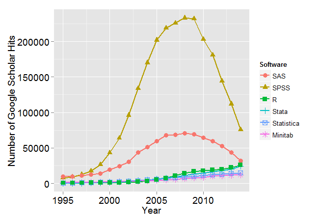
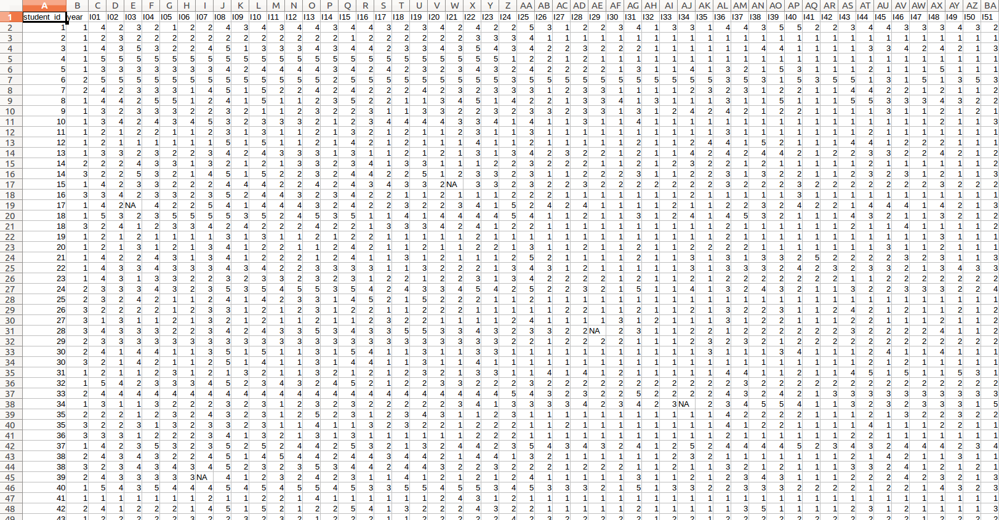
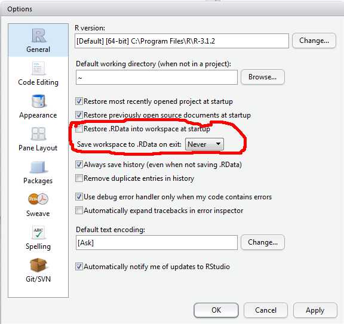
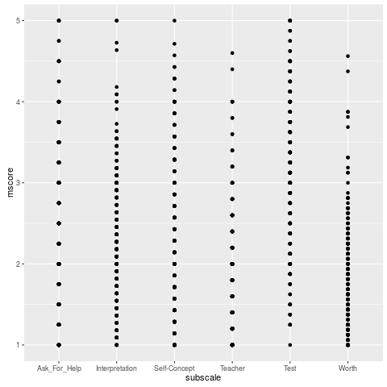
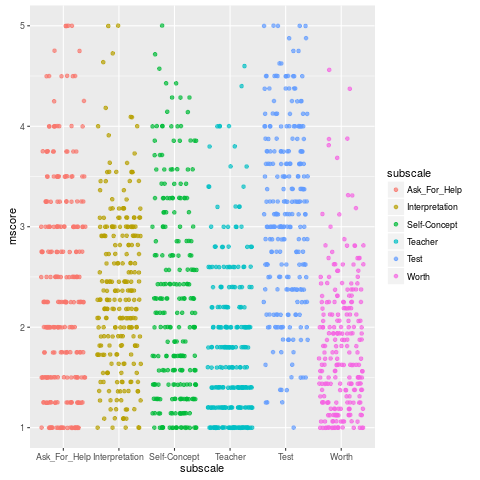
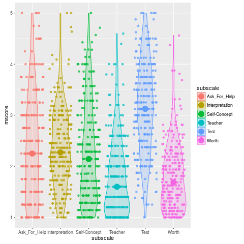
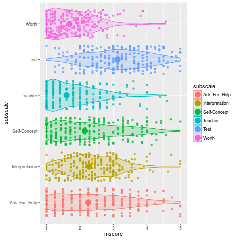
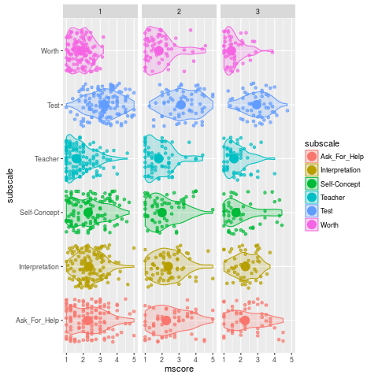
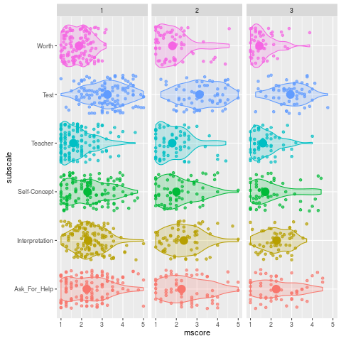

Getting started with R
Table of Contents
Why learn R?
- A picture says 1000 words (http://r4stats.com/articles/popularity/)

Introduction
- Download the R script for the introduction
What is R?

A programming environment for data processing and statistical analysis
- free and open-source
- community supported
- continually evolving
- promotes reproducible research
Interacting with R
- base R (console)
- http://www.r-project.org/
REPL(Read-Evaluate-Print-Loop)

- RStudio: An Integrated Development Environment (IDE) for R

Warming up: Use R as a calculator
- be prepared to make lots of typos (at first) :/
## REPL: Read/Evaluate/Print Loop
## R prints results back at you
1 + 1
[1] 2
- R remembers the individual lines you typed in the past (your history). Use arrow keys to scroll through your history
1 + 1 + 3
[1] 5
- You can break up math expressions over multiple lines; R waits for a complete expression before processing it.
## here comes a long expression
## let's break it over multiple lines
1 + 2 + 3 + 4 + 5 + 6 +
7 + 8 + 9 +
10
[1] 55
"Good afternoon"
[1] "Good afternoon"
- You can break up text over multiple lines; R waits for a close quote before processing it
"There is nothing in the world
that makes people so unhappy as fear.
The misfortune that befalls us is
seldom, or never, as bad as that
which we fear.
- Friedrich Schiller"
[1] "There is nothing in the world \nthat makes people so unhappy as fear. \nThe misfortune that befalls us is \nseldom, or never, as bad as that \nwhich we fear.\n\n- Friedrich Schiller"
## comments: any text from '#' on is ignored until end of line
22 / 7 # approximation to pi
[1] 3.142857
Storing results in a variable
- capitalization matters
- don’t use spaces or special characters
(^&"'*+?)etc. - use the assignment operator
<-
## use the assignment operator '<-'
## R stores the number in the variable
x <- 5
x * 2
[1] 10
## R evaluates the expression and stores the result in the variable
boring_calculation <- 2 + 2
- Note that it doesn’t print the result back at you when it’s stored. To view the result, just type the variable name on a blank line.
boring_calculation
[1] 4
The workspace
- Anytime you assign something to a new variable, R creates a new object in your workspace. Objects in your workspace exist until you end your session; then they disappear forever (unless you save them).
ls()
rm("x")
rm(list = ls()) # clear out the workspace
Vectors and vectorized calculations
- vector: array of ordered elements
- all of the same data type (numeric, character, factor)
## put information into a vector using c(...)
c(1, 2, 3)
[1] 1 2 3
c("this", "is", "cool")
[1] "this" "is" "cool"
## what happens when you mix types?
c(2, "good", 2, "b", "true")
[1] "2" "good" "2" "b" "true"
Calling functions
iq_z <- (iq - 100) / 15
sort(iq_z)
[1] -0.93333333 -0.06666667 0.06666667 1.80000000
round(iq_z, 2)
[1] -0.93 0.07 1.80 -0.07
round(sort(iq_z), 2)
[1] -0.93 -0.07 0.07 1.80
Add-on packages
- Installing
- The Comprehensive R Archive Network (CRAN) hosts the official repository of R add-on packages
- these are installed using the function
install.packages("package_name")in base R
- these are installed using the function
- There are many unofficial packages hosted at github, which can be installed using
install_github()from the add-on packagedevtools.
install.packages("fortunes") devtools::install_github("sckott/cowsay") - The Comprehensive R Archive Network (CRAN) hosts the official repository of R add-on packages
- Accessing the functionality of add-on packages
library("dplyr") # access functionality, including pipes
Pipes
Calls to functions can be serialized (put in sequence) using the %>% operator. This is a syntactic innovation introduced to R by Stephan Milton Bache in 2014. The %>% lives in the package magrittr, and also is exported through the add-on package dplyr by Hadley Wickham.
## replaces:
## round(sort(iq_z), 2)
iq_z %>% sort() %>% round(2)
[1] -0.93 -0.07 0.07 1.80
Getting help
- How “extreme” are these IQ scores? We want to use the
pnorm()function from base R.
## help(topic, package)
help("pnorm") ## help page
?pnorm
example("pnorm") ## show examples (careful!)
Normal package:stats R Documentation
The Normal Distribution
Description:
Density, distribution function, quantile function and random
generation for the normal distribution with mean equal to ‘mean’
and standard deviation equal to ‘sd’.
Usage:
dnorm(x, mean = 0, sd = 1, log = FALSE)
pnorm(q, mean = 0, sd = 1, lower.tail = TRUE, log.p = FALSE)
qnorm(p, mean = 0, sd = 1, lower.tail = TRUE, log.p = FALSE)
rnorm(n, mean = 0, sd = 1)
Arguments:
x, q: vector of quantiles.
p: vector of probabilities.
n: number of observations. If ‘length(n) > 1’, the length is
taken to be the number required.
mean: vector of means.
sd: vector of standard deviations.
log, log.p: logical; if TRUE, probabilities p are given as log(p).
lower.tail: logical; if TRUE (default), probabilities are P[X <= x]
otherwise, P[X > x].
Details:
If ‘mean’ or ‘sd’ are not specified they assume the default values
of ‘0’ and ‘1’, respectively.
The normal distribution has density
f(x) = 1/(sqrt(2 pi) sigma) e^-((x - mu)^2/(2 sigma^2))
where mu is the mean of the distribution and sigma the standard
deviation.
Value:
‘dnorm’ gives the density, ‘pnorm’ gives the distribution
function, ‘qnorm’ gives the quantile function, and ‘rnorm’
generates random deviates.
The length of the result is determined by ‘n’ for ‘rnorm’, and is
the maximum of the lengths of the numerical arguments for the
other functions.
The numerical arguments other than ‘n’ are recycled to the length
of the result. Only the first elements of the logical arguments
are used.
For ‘sd = 0’ this gives the limit as ‘sd’ decreases to 0, a point
mass at ‘mu’. ‘sd < 0’ is an error and returns ‘NaN’.
## what percentile (against the standard normal dist)
pnorm(iq_z)
## what percentile, calculated from raw scores
pnorm(iq, mean = 100, sd = 15)
[1] 0.1753239 0.5265765 0.9640697 0.4734235 [1] 0.1753239 0.5265765 0.9640697 0.4734235
Data types
- other data types include:
matrix |
two dimensions | all data must be of same type |
array |
two or more dimensions | all data must be of same type |
- also
list |
like a vector, but elements can be different types |
data.frame |
tabular data, most common for statistical analysis |
- Data frames
- The
data.framedata type allows us to represent tabular data, like the type of data you find in a spreadsheet.
subject IQ z_score percentile DB 86 -0.93 18 FF 101 0.07 53 LQ 127 1.8 96 MJ 99 -0.07 47 - to create the above table:
dat <- data.frame(subject = c("DB", "FF", "LQ", "MJ"), IQ = iq, z_score = iq_z, percentile = pnorm(iq_z) * 100) datsubject IQ z_score percentile 1 DB 86 -0.93333333 17.53239 2 FF 101 0.06666667 52.65765 3 LQ 127 1.80000000 96.40697 4 MJ 99 -0.06666667 47.34235
- The
- Referencing values in a data.frame
- referencing a column
## all of these methods are equivalent dat$IQ dat[["IQ"]] dat[[2]] dat[, "IQ"] dat[, 2][1] 86 101 127 99 [1] 86 101 127 99 [1] 86 101 127 99 [1] 86 101 127 99 [1] 86 101 127 99
Developing an analysis in R
For this second part of the training, we are going to analyse data from the STARS Statistics Anxiety Survey, which was administered to students every year over a three-year span (thanks to Maxine Swingler for the data from years 1 and 2). All the responses have been anonymised; in other words, by associating the responses for each student with an arbitrary ID number.
The STARS survey (Cruise, Cash, & Bolton, 1985) is a 51-item questionnaire, with each response on a 1 to 5 scale, with higher numbers indicating greater anxiety.

STARS has five subscales:
| x |
|---|
| org_babel_R_eoe |
We have the data for the three years in wide format. In other words, it looks like this:

Our tasks are:
- reshape the data so that we can match responses to subscales;
- match responses to subscales;
- calculate means for each subscale for each respondent;
- visualize the results using the add-on package
ggplot2; - plug the code into an RMarkdown document to create a dynamic report.
Download the data and scripts (.zip file)
Maximize reproducibility
- don’t save your workspace image on exit and don’t load it on startup

The all-important “working directory”
- You can set your working directory from within the console using
setwd(), or you can do access a file picker from the drop-down menu:Session | Set Working Directory | Choose Directory.... (The file picker will generate the appropriatesetwd()command in your console.) - NEVER use
setwd()within a script. Your directory structure is unique, and may be different when you access these files in the future (say, on a different computer). Don’t. Do. It. - The script you are writing should “live” inside the working directory, so that it subdirectories can be accessed in your script using relative instead of absolute path.
Structure of an R script
## comment here should say something about this script
## - who made it, what's it for
## - any particular version requirements?
## add-on packages
library("dplyr") # data processing
library("tidyr") # tidying
library("ggplot2") # plotting
library("lme4") # mixed-effects analysis
## any functions that I have defined
my_func <- function(a, b, c) (a + b) / c
cats_are_cool <- function() cat("cats are cool\n")
## read in data you will be using
dat <- read.csv("my_data.csv")
## the code
my_func(1, 3, 2)
## .. etc.
File Input/Output
library("dplyr") # data processing
library("tidyr") # data reshaping
library("ggplot2") # plotting
scales <- read.csv("subscales.csv", stringsAsFactors = FALSE)
Error in file(file, "rt") : cannot open the connection In addition: Warning message: In file(file, "rt") : cannot open file 'subscales.csv': No such file or directory
glimpse(scales)
Error in glimpse(scales) : object 'scales' not found
stars_wide <- read.csv("stars.csv", stringsAsFactors = FALSE)
Error in file(file, "rt") : cannot open the connection In addition: Warning message: In file(file, "rt") : cannot open file 'stars.csv': No such file or directory
glimpse(stars_wide)
Error in glimpse(stars_wide) : object 'stars_wide' not found
Reshape wide to long
stars <- stars_wide %>% gather(item_id, score, I01:I51)
Error in eval(lhs, parent, parent) : object 'stars_wide' not found
glimpse(stars)
function (x, full = TRUE, scale = TRUE, radius = TRUE, labels = dimnames(x)[[1L]],
locations = NULL, nrow = NULL, ncol = NULL, len = 1, key.loc = NULL,
key.labels = dimnames(x)[[2L]], key.xpd = TRUE, xlim = NULL, ylim = NULL,
flip.labels = NULL, draw.segments = FALSE, col.segments = 1L:n.seg,
col.stars = NA, col.lines = NA, axes = FALSE, frame.plot = axes, main = NULL,
sub = NULL, xlab = "", ylab = "", cex = 0.8, lwd = 0.25, lty = par("lty"),
xpd = FALSE, mar = pmin(par("mar"), 1.1 + c(2 * axes + (xlab != ""),
2 * axes + (ylab != ""), 1, 0)), add = FALSE, plot = TRUE, ...)
Map to subscales
## map each item to each of the 5 subscales
## I3 --> Ask_For_Help
## I2 --> Interpretation
## I25 --> Self-Concept
## I30 --> Teacher
## I1 --> Test
## I24 --> Worth
stars_sub <- inner_join(scales, stars, "item_id")
Error in inner_join(scales, stars, "item_id") : object 'scales' not found
glimpse(stars_sub)
Error in glimpse(stars_sub) : object 'stars_sub' not found
Data summaries
## calculate subscale means per student_id and year
stars_means <- stars_sub %>%
group_by(student_id, year, subscale) %>%
summarise(mscore = mean(score))
Error in eval(lhs, parent, parent) : object 'stars_sub' not found
glimpse(stars_means)
Error in glimpse(stars_means) : object 'stars_means' not found
ggplot(stars_means, aes(subscale, mscore)) + geom_point()

ggplot(stars_means, aes(subscale, mscore, color = subscale)) +
geom_jitter(alpha = .7)

ggplot(stars_means, aes(subscale, mscore, color = subscale)) +
geom_jitter(alpha = .7) +
geom_violin(aes(fill = subscale), alpha = .2) +
stat_summary(fun.y = 'median', geom = "point", size = 5)

ggplot(stars_means, aes(subscale, mscore, color = subscale)) +
geom_jitter(alpha = .7) +
geom_violin(aes(fill = subscale), alpha = .2) +
stat_summary(fun.y = 'median', geom = "point", size = 5) +
coord_flip()

ggplot(stars_means, aes(subscale, mscore, color = subscale)) +
geom_jitter(alpha = .7) +
geom_violin(aes(fill = subscale), alpha = .2) +
stat_summary(fun.y = 'median', geom = "point", size = 5) +
coord_flip() +
facet_wrap(~year)

ggplot(stars_means, aes(subscale, mscore, color = subscale)) +
geom_jitter(alpha = .7) +
geom_violin(aes(fill = subscale), alpha = .2) +
stat_summary(fun.y = 'median', geom = "point", size = 5) +
coord_flip() +
facet_wrap(~year) +
guides(color = FALSE, fill = FALSE)

Final Standalone R Script
library("dplyr") # data processing
library("tidyr") # data reshaping
library("ggplot2") # plotting
scales <- read.csv("subscales.csv", stringsAsFactors = FALSE)
stars_wide <- read.csv("stars.csv", stringsAsFactors = FALSE)
stars <- stars_wide %>% gather(item_id, score, I01:I51)
stars_sub <- inner_join(scales, stars, "item_id")
## calculate subscale means per student_id and year
stars_means <- stars_sub %>%
group_by(student_id, year, subscale) %>%
summarise(mscore = mean(score))
ggplot(stars_means, aes(subscale, mscore, color = subscale)) +
geom_jitter(alpha = .7) +
geom_violin(aes(fill = subscale), alpha = .2) +
stat_summary(fun.y = 'median', geom = "point", size = 5) +
coord_flip() +
facet_wrap(~year) +
guides(color = FALSE, fill = FALSE)
R Markdown file
---
title: "Report on Stats Anxiety"
author: "Dale"
date: "December 8, 2015"
output: pdf_document
bibliography: stars.bib
csl: apa.csl
---
We used the following add-on packages to perform the analyses and create the graphics.
```{r message=FALSE}
library("dplyr") # data processing
library("tidyr") # data reshaping
library("ggplot2") # plotting
```
Students from years 1, 2, and 3 were given the STARS statistical anxiety rating scale by @cruise_et_al_1985.
```{r, echo=FALSE, warning=FALSE}
scales <- read.csv("subscales.csv", stringsAsFactors = FALSE)
stars_wide <- read.csv("stars.csv", stringsAsFactors = FALSE)
stars <- stars_wide %>% gather(item_id, score, I01:I51)
stars_sub <- inner_join(scales, stars, "item_id")
## calculate subscale means per student_id and year
stars_means <- stars_sub %>%
group_by(student_id, year, subscale) %>%
summarise(mscore = mean(score))
```
Descriptive statistics for the subscales are below:
```{r, echo = FALSE, results = 'asis'}
dstats <- stars_means %>%
group_by(subscale) %>%
summarise(m = mean(mscore, na.rm = TRUE),
med = median(mscore, na.rm = TRUE),
sdev = sd(mscore, na.rm = TRUE))
knitr::kable(dstats)
```
```{r, echo = FALSE}
max_anx <- max(dstats$m)
highest <- dstats$subscale[dstats$m == max_anx]
```
Students exhibited greatest anxiety on the `r highest` subscale, with a mean anxiety rating of `r round(max_anx, 2)`.
# Plot
Here is a plot of the results by year:
```{r, echo = FALSE, warning = FALSE}
ggplot(stars_means, aes(subscale, mscore, color = subscale)) +
geom_jitter(alpha = .7) +
geom_violin(aes(fill = subscale), alpha = .2) +
stat_summary(fun.y = 'median', geom = "point", size = 5) +
coord_flip() +
facet_wrap(~year) +
guides(color = FALSE, fill = FALSE)
```
References
Cruise, R. J., Cash, R. W., & Bolton, D. L. (1985). Development and validation of an instrument to measure statistical anxiety. Proceedings of the American Statistical Association, Section on Statistical Education, Las Vegas, NV.